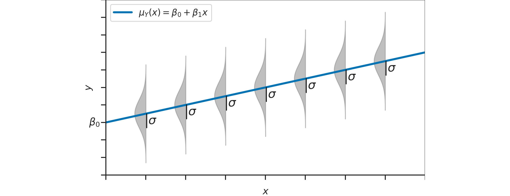
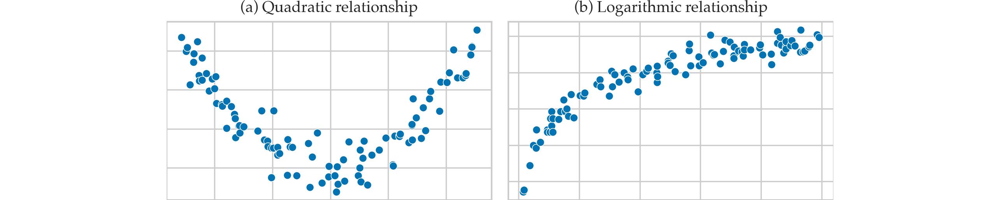
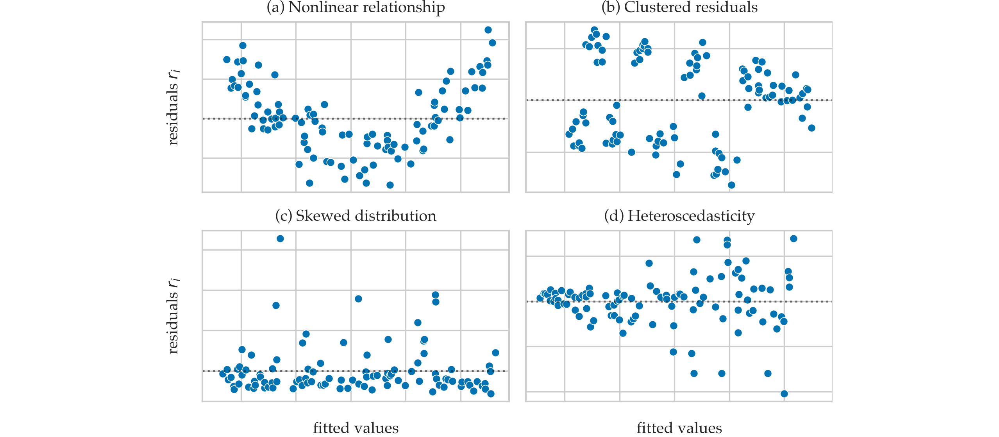
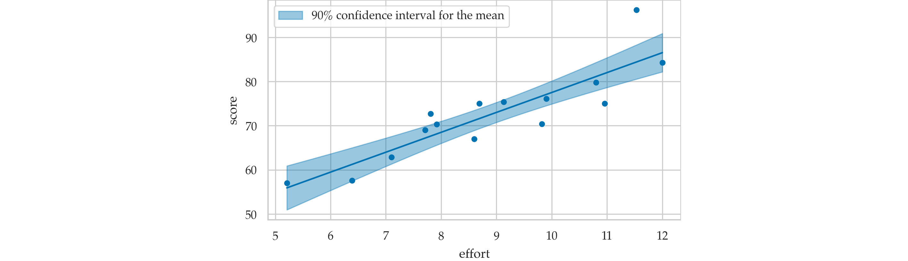
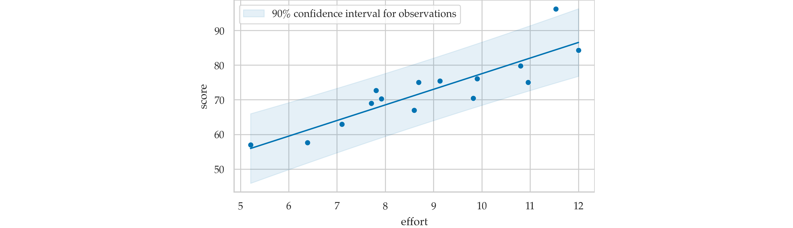
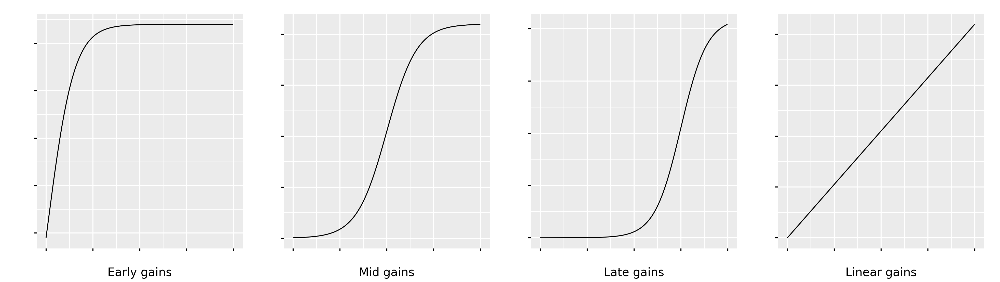

Section 4.1 — Simple linear regression#
This notebook contains the code examples from Section 4.1 Simple linear regression from the No Bullshit Guide to Statistics.
Notebook setup#
# Ensure required Python modules are installed
%pip install --quiet numpy scipy seaborn pandas statsmodels ministats
[notice] A new release of pip is available: 26.0 -> 26.0.1
[notice] To update, run: pip install --upgrade pip
Note: you may need to restart the kernel to use updated packages.
# load Python modules
import numpy as np
import pandas as pd
import seaborn as sns
import matplotlib.pyplot as plt
from ministats.plots.figures import plot_residuals
from ministats.plots.figures import plot_residuals2
# Figures setup
plt.clf() # needed otherwise `sns.set_theme` doesn't work
sns.set_theme(
context="paper",
style="whitegrid",
palette="colorblind",
rc={"font.family": "serif",
"font.serif": ["Palatino", "DejaVu Serif", "serif"],
"figure.figsize": (5, 3)},
)
%config InlineBackend.figure_format = "retina"
<Figure size 640x480 with 0 Axes>
# Simple float __repr__
if int(np.__version__.split(".")[0]) >= 2:
np.set_printoptions(legacy='1.25')
# set random seed for repeatability
np.random.seed(42)
# Download datasets/ directory if necessary
from ministats import ensure_datasets
ensure_datasets()
datasets/ directory already exists.
import warnings
# silence kurtosistest warning when using n < 20
warnings.filterwarnings("ignore", category=UserWarning)
\(\def\stderr#1{\mathbf{se}_{#1}}\) \(\def\stderrhat#1{\hat{\mathbf{se}}_{#1}}\) \(\newcommand{\Mean}{\textbf{Mean}}\) \(\newcommand{\Var}{\textbf{Var}}\) \(\newcommand{\Std}{\textbf{Std}}\) \(\newcommand{\Freq}{\textbf{Freq}}\) \(\newcommand{\RelFreq}{\textbf{RelFreq}}\) \(\newcommand{\DMeans}{\textbf{DMeans}}\) \(\newcommand{\Prop}{\textbf{Prop}}\) \(\newcommand{\DProps}{\textbf{DProps}}\)
(this cell contains the macro definitions like \(\stderr{\overline{\mathbf{x}}}\), \(\stderrhat{}\), \(\Mean\), …)
Definitions#
TODO: add definitions
Linear model#

Example: students score as a function of effort#
students = pd.read_csv("datasets/students.csv")
students.head()
| student_ID | background | curriculum | effort | score | |
|---|---|---|---|---|---|
| 0 | 1 | arts | debate | 10.96 | 75.0 |
| 1 | 2 | science | lecture | 8.69 | 75.0 |
| 2 | 3 | arts | debate | 8.60 | 67.0 |
| 3 | 4 | arts | lecture | 7.92 | 70.3 |
| 4 | 5 | science | debate | 9.90 | 76.1 |
efforts = students["effort"]
scores = students["score"]
sns.scatterplot(x=efforts, y=scores);
{kind=link}
Compute the correlation#
np.corrcoef(efforts, scores)[0,1]
# ALT. students[["effort","score"]].corr()
# np.corrcoef
0.8794375135614695
Parameter estimation using least squares#
meaneffort = efforts.mean()
meanscore = scores.mean()
num = np.sum( (efforts-meaneffort)*(scores-meanscore) )
denom = np.sum( (efforts - meaneffort)**2 )
b1 = num / denom
b1
4.504850344209071
b0 = meanscore - b1*meaneffort
b0
32.46580930159963
es = np.linspace(5, 12)
scorehats = b0 + b1*es
sns.lineplot(x=es, y=scorehats)
sns.scatterplot(x=efforts, y=scores);
{kind=link}
# # ALT.
# sns.regplot(x=efforts, y=scores, ci=None);
Least squares optimization for the parameters#
How do we find the parameter estimates of the model?
plot_residuals(efforts, scores, b0, b1)
sns.scatterplot(x=efforts, y=scores)
es = np.linspace(5, 12.2)
scorehats = b0 + b1*es
sns.lineplot(x=es, y=scorehats, color="C4");
{kind=link}
ax = sns.scatterplot(x=efforts, y=scores, zorder=4)
es = np.linspace(5, 12.2)
scorehats = b0 + b1*es
sns.lineplot(x=es, y=scorehats, color="C4", zorder=5)
plot_residuals2(efforts, scores, b0, b1, ax=ax);
{kind=link}
Estimating the standard deviation parameter#
scorehats = b0 + b1*efforts
residuals = scores - scorehats
residuals[0:4]
0 -6.838969
1 3.387041
2 -4.207522
3 2.155776
dtype: float64
SSR = np.sum( residuals**2 )
n = len(students)
sigmahat = np.sqrt( SSR / (n-2) )
sigmahat
4.929598282660258
Model diagnostics#
Scatter plots#
Examples of nonlinear patterns#

Residuals plots#
scorehats = b0 + b1*efforts
residuals = scores - scorehats
Residuals versus the predicted values#
ax = sns.scatterplot(x=scorehats, y=residuals)
ax.set_xlabel("model predictions ($\\hat{s}_i$)")
ax.set_ylabel("residuals ($r_i = s_i - \\hat{s}_i$)")
ax.axhline(y=0, color="b", linestyle="dotted");
{kind=link}
Residuals versus the predictor (bonus)#
# ax = sns.scatterplot(x=efforts, y=residuals)
# ax.set_xticks(range(5,12+1))
# ax.set_ylabel("residuals ($r_i = s_i - \\hat{s}_i$)")
# ax.axhline(y=0, color="b", linestyle="dotted");
QQ-plot of the residuals#
from statsmodels.graphics.api import qqplot
qqplot(residuals, line="s");
{kind=link}
Residual plots that show violated assumptions#

Sum of squares quantities#
Sum of squared residuals#
SSR = np.sum( residuals**2 )
SSR
315.9122099692906
Explained sum of squares#
meanscore = scores.mean()
ESS = np.sum( (scorehats-meanscore)**2 )
ESS
1078.2917900307098
Total sum of squares#
TSS = np.sum( (scores - meanscore)**2 )
TSS
1394.2040000000002
SSR + ESS # == TSS
1394.2040000000004
Coefficient of determination \(R^2\)#
R2 = ESS / TSS
R2
0.7734103402591799
Using linear models to make predictions#
def predict(x, b0, b1):
yhat = b0 + b1*x
return yhat
Confidence interval for the mean#
TODO: add formulas
Confidence interval for observations#
TODO: add formulas
Example:predicting students’ scores#
Predict the score of a new student who invests 9 hours of effort per week.
neweffort = 9
scorehat = predict(neweffort, b0=32.5, b1=4.5)
scorehat
73.0
Confidence interval for the mean score#
#######################################################
newdev = (neweffort - efforts.mean())**2
sum_dev2 = np.sum((efforts - efforts.mean())**2)
se_meanscore = sigmahat * np.sqrt(1/n + newdev/sum_dev2)
se_meanscore
1.2744485881877106
from scipy.stats import t as tdist
alpha = 0.1
t_l, t_u = tdist(df=n-2).ppf([alpha/2, 1-alpha/2])
[scorehat + t_l*se_meanscore, scorehat + t_u*se_meanscore]
[70.74303643371016, 75.25696356628984]
Prediction band for the mean score#

Confidence interval for predicted scores#
se_score = sigmahat * np.sqrt(1 + 1/n + newdev/sum_dev2)
se_score
5.0916754052414435
alpha = 0.1
t_l, t_u = tdist(df=n-2).ppf([alpha/2, 1-alpha/2])
[scorehat + t_l*se_score, scorehat + t_u*se_score]
[63.98298198333331, 82.0170180166667]
Prediction band for scores#

Prediction caveats#
efforts.min(), efforts.max()
(5.21, 12.0)
It’s not OK to extrapolate the validity of the model outside of the range of values where we have observed data.
For example, there is no reason to believe in the model’s predictions about an effort of 20 hours per week:
predict(20, b0=32.5, b1=4.5)
122.5
Indeed, the model predicts the grade will be above 100% which is impossible.
Explanations#
Software for fitting linear models#
scipystatsmodelsscikit-learn
Fitting linear models with statsmodels#
import statsmodels.formula.api as smf
lm1 = smf.ols("score ~ 1 + effort", data=students).fit()
type(lm1)
statsmodels.regression.linear_model.RegressionResultsWrapper
Estimated parameters for the model#
lm1.params
Intercept 32.465809
effort 4.504850
dtype: float64
type(lm1.params)
pandas.core.series.Series
We often want to extract the intercept and slope parameters for use in subsequent calculations.
b0 = lm1.params["Intercept"] # = lm1.params[0]
b1 = lm1.params["effort"] # = lm1.params[1]
b0, b1
(32.465809301599606, 4.504850344209074)
The estimate \(\widehat{\sigma}\) is obtained by taking the square root of the .scale attribute.
sigmahat = np.sqrt(lm1.scale)
sigmahat
4.929598282660258
Model fitted values#
lm1.fittedvalues # == scorehats
0 81.838969
1 71.612959
2 71.207522
3 68.144224
4 77.063828
5 81.118193
6 67.648690
7 73.595093
8 55.936080
9 67.198205
10 76.703440
11 84.406734
12 64.450247
13 61.251803
14 86.524013
dtype: float64
Residuals#
lm1.resid # == scores - scorehats
0 -6.838969
1 3.387041
2 -4.207522
3 2.155776
4 -0.963828
5 -1.318193
6 5.051310
7 1.804907
8 1.063920
9 1.801795
10 -6.303440
11 11.793266
12 -1.550247
13 -3.651803
14 -2.224013
dtype: float64
Sum-of-squared quantities#
# SSR # ESS # TSS # R2
lm1.ssr, lm1.ess, lm1.centered_tss, lm1.rsquared
(315.91220996929053,
1078.2917900307098,
1394.2040000000002,
0.7734103402591798)
Predictions#
Predict the score of a new student who invests 9 hours of effort per week.
lm1.predict({"effort":9})
0 73.009462
dtype: float64
pred = lm1.get_prediction({"effort":9})
pred.se_mean, pred.conf_int(alpha=0.1)
(array([1.27444859]), array([[70.75249883, 75.26642597]]))
pred.se_obs, pred.conf_int(obs=True, alpha=0.1)
(array([5.09167541]), array([[63.99244438, 82.02648042]]))
Model summary table#
lm1.summary()
| Dep. Variable: | score | R-squared: | 0.773 |
|---|---|---|---|
| Model: | OLS | Adj. R-squared: | 0.756 |
| Method: | Least Squares | F-statistic: | 44.37 |
| Date: | Thu, 12 Feb 2026 | Prob (F-statistic): | 1.56e-05 |
| Time: | 17:49:10 | Log-Likelihood: | -44.140 |
| No. Observations: | 15 | AIC: | 92.28 |
| Df Residuals: | 13 | BIC: | 93.70 |
| Df Model: | 1 | ||
| Covariance Type: | nonrobust |
| coef | std err | t | P>|t| | [0.025 | 0.975] | |
|---|---|---|---|---|---|---|
| Intercept | 32.4658 | 6.155 | 5.275 | 0.000 | 19.169 | 45.763 |
| effort | 4.5049 | 0.676 | 6.661 | 0.000 | 3.044 | 5.966 |
| Omnibus: | 4.062 | Durbin-Watson: | 2.667 |
|---|---|---|---|
| Prob(Omnibus): | 0.131 | Jarque-Bera (JB): | 1.777 |
| Skew: | 0.772 | Prob(JB): | 0.411 |
| Kurtosis: | 3.677 | Cond. No. | 44.5 |
Notes:
[1] Standard Errors assume that the covariance matrix of the errors is correctly specified.
Helper functions for plotting linear model results#
plot_reg(lm): generate a regression plot for the modellmplot_redid(lm): residuals plot for the modellmplot_pred_bands(lm, ...): plot confidence intervals modellm. Useci_mean=Trueto plot the predictions for the mean, orci_obs=Trueto plot the predictions of the observations variable.
Regression plot#
from ministats import plot_reg
plot_reg(lm1);
{kind=link}
Residuals plot#
xs = np.array([1,2,3])
hasattr(xs, "name")
False
xs = pd.Series([1,2,3])
hasattr(xs, "name") and xs.name is not None
False
from ministats import plot_resid
plot_resid(lm1);
{kind=link}
# BONUS plot residuals against predictor variable
plot_resid(lm1, pred="effort");
{kind=link}
Prediction band plots#
from ministats import plot_pred_bands
plot_reg(lm1)
plot_pred_bands(lm1, ci_mean=True, alpha_mean=0.1);
{kind=link}
plot_reg(lm1)
plot_pred_bands(lm1, ci_obs=True, alpha_obs=0.1);
{kind=link}
Seaborn functions for plotting linear models#
Regression plot#
sns.regplot(x="effort", y="score", ci=None, data=students);
{kind=link}
Residual plot#
sns.residplot(x="effort", y="score", data=students);
{kind=link}
Pearson correlation coefficient revisited#
Alternative methods for fitting linear models (optional)#
Numerical optimization#
from scipy.optimize import minimize
def ssr(betas):
scorehats = betas[0] + betas[1]*efforts
resids = scores - scorehats
return np.sum(resids**2)
b0, b1 = minimize(ssr, x0=[0,0]).x
b0, b1
(32.46580861926548, 4.504850415190829)
Linear algebra#
linear algebra solution using numpy
import numpy as np
# Prepare the design matrix
n = len(students)
X = np.ndarray((n,2))
X[:,0] = 1
X[:,1] = efforts
X
array([[ 1. , 10.96],
[ 1. , 8.69],
[ 1. , 8.6 ],
[ 1. , 7.92],
[ 1. , 9.9 ],
[ 1. , 10.8 ],
[ 1. , 7.81],
[ 1. , 9.13],
[ 1. , 5.21],
[ 1. , 7.71],
[ 1. , 9.82],
[ 1. , 11.53],
[ 1. , 7.1 ],
[ 1. , 6.39],
[ 1. , 12. ]])
We obtain the least squares solution using the Moore–Penrose inverse formula:
lares = np.linalg.inv(X.T.dot(X)).dot(X.T).dot(scores)
b0, b1 = lares
b0, b1
(32.46580930159923, 4.504850344209087)
Fitting linear models using scipy#
The helper function scipy.stats.linregress …
from scipy.stats import linregress
scipyres = linregress(efforts, scores)
scipyres.intercept, scipyres.slope
(32.46580930159963, 4.504850344209071)
Fitting linear models using scikit-learn#
The class sklearn.linear_model.LinearRegression allows us to fit linear models.
# %pip install scikit-learn
# from sklearn.linear_model import LinearRegression
# sklmodel = LinearRegression()
# sklmodel.fit(efforts.values[:,np.newaxis], scores)
# sklmodel.intercept_, sklmodel.coef_
# (32.46580930159961, array([4.50485034]))
Using the statsmodels low-level matrix API#
import statsmodels.api as sm
X = sm.add_constant(efforts)
y = scores
smres = sm.OLS(y,X).fit()
smres.params["const"], smres.params["effort"]
(32.465809301599606, 4.504850344209074)
Discussion#
Maximum likelihood estimation#
from scipy.optimize import minimize
from scipy.stats import norm
n = len(students)
efforts = students["effort"]
scores = students["score"]
def neg_log_likelihood(betas):
scorehats = betas[0] + betas[1] * efforts
residuals = scores - scorehats
SSR = np.sum(residuals**2)
sigmahat_MLE = np.sqrt(SSR/n)
likelihoods = norm.pdf(residuals, scale=sigmahat_MLE)
log_likelihood = np.sum(np.log(likelihoods))
return -log_likelihood
b0, b1 = minimize(neg_log_likelihood, x0=[0,0]).x
b0, b1
(32.4658144895282, 4.504849789926615)
# calculate the maximum log-likelihood achieved
-neg_log_likelihood([b0, b1])
-44.139684178072926
# the same quantity reported by the model `lm1`
lm1.llf
-44.139684178072514
Examples of non-linear relationships#
Hare are some examples of the different possible relationships between the effort and score variables.

Exercises#
Exercise E??: marketing dataset#
marketing = pd.read_csv("datasets/exercises/marketing.csv")
print(marketing.columns)
lm_mkt = smf.ols("sales ~ 1 + youtube", data=marketing).fit()
plot_reg(lm_mkt)
Index(['youtube', 'facebook', 'newspaper', 'sales'], dtype='object')
<Axes: xlabel='youtube', ylabel='sales'>
{kind=link}
from ministats import plot_resid
plot_resid(lm_mkt)
<Axes: xlabel='fitted values', ylabel='residuals $r_i$'>
{kind=link}
Links#
(BONUS MATERIAL) Formula for standard error of coefficients#
lm1.bse
Intercept 6.155051
effort 0.676276
dtype: float64
Formula using summations
TODO: show derivation why these formulas are equiv. to matrix formulas below when p=1
sum_dev2 = np.sum((efforts - efforts.mean())**2)
se_Intercept = sigmahat * np.sqrt(1/n + efforts.mean()**2/sum_dev2)
se_b_effort = sigmahat/np.sqrt(sum_dev2)
se_Intercept, se_b_effort
(6.155051380977695, 0.6762756464968055)
Alternative formula using design matrix
where \(X\) is the design matrix.
# construct the design matrix for the model
X = sm.add_constant(students[["effort"]])
# calculate the diagonal of the inverse-covariance matrix
inv_covs = np.diag(np.linalg.inv(X.T.dot(X)))
np.sqrt(sigmahat**2 * inv_covs)
array([6.15505138, 0.67627565])
lm1.model.exog[:,1]
array([10.96, 8.69, 8.6 , 7.92, 9.9 , 10.8 , 7.81, 9.13, 5.21,
7.71, 9.82, 11.53, 7.1 , 6.39, 12. ])